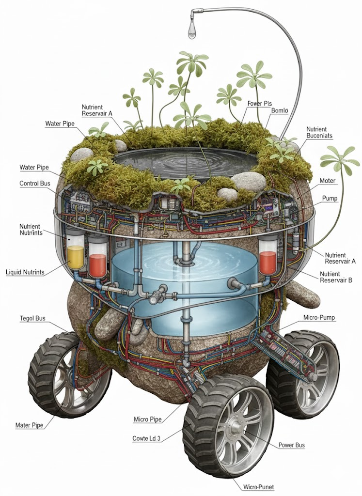

Paco Paco 2e
Category: Objects
Mobile growing system
Paco Paco 2E is one of our closest attempts to place nature and
technology side by side.
Born from a fascination with cargo cults, it imagines the two as a
single organism rather than opposing systems.
Unbuilt, 2023
Paco Paco 2E
It grows from an idea to which we remain stubbornly loyal: constructing nature within the city, and continuing to search for ways in which plants can survive there.
The prototype behaves like a low-tech organism—an aspiring biomimetic companion to high technology.
